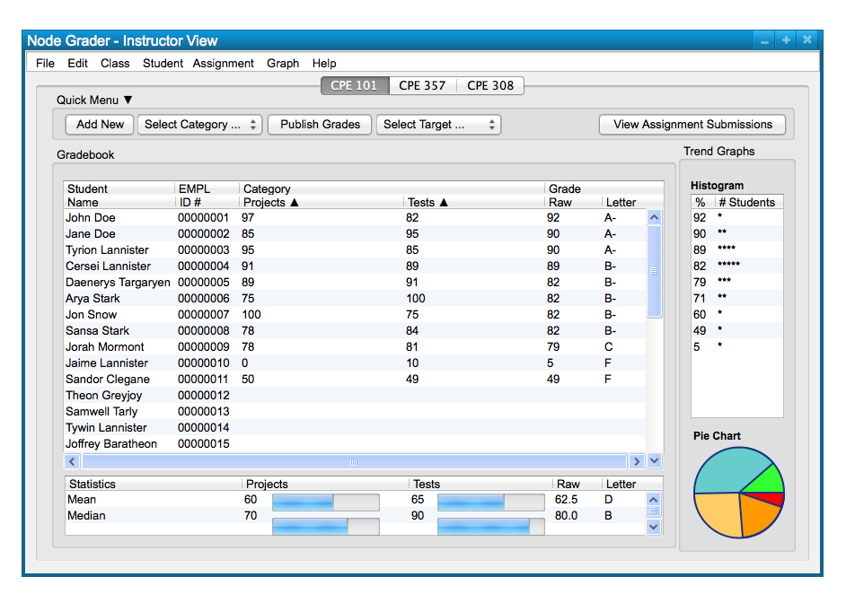
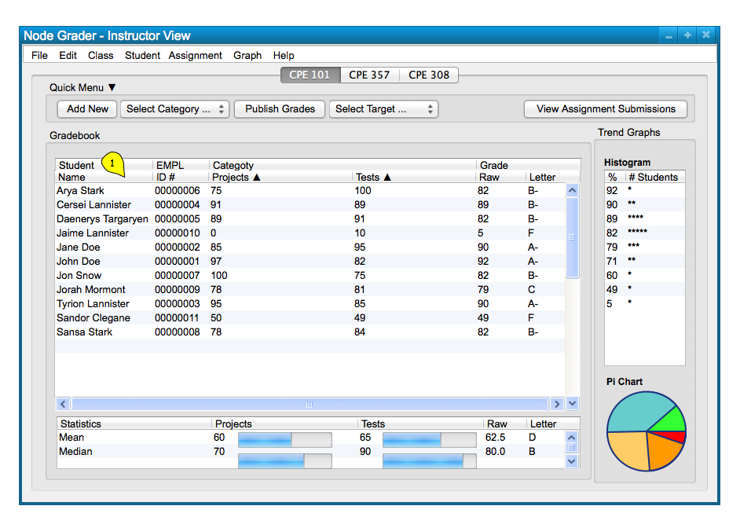
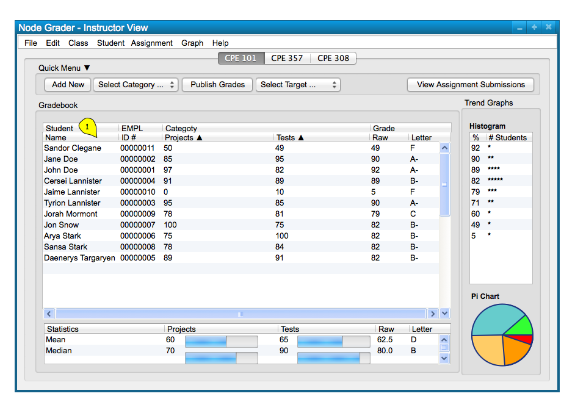

The default order that students are listed in the class spreadsheet is the order in which they were added, whether by
roster or manually. However, the order of the students listed in the spreadsheet can be sorted alphabetically if the user
wants to sort their class by student names. Figure 1 shows a sample class that is unsorted, as though the user added each
student to the spreadsheet manually already.

Figure 1: Sample Class Unsorted.
To sort the students listed by name, the user must click on the "Name" field at the top of the students' name
column. This results in sorting the students alphabetically by their first name. Figure 2 below shows the sample class
sorted by their first name after clicking the "Name" field.

Figure 2: Sample Class Sorted (First Name).
Once sorted by first name, the user clicks the "Name" field again to sort the class alphabetically according
to their last name as well, a common way to sort class data for universities. Figure 3 below shows the corresponding class listing following the same method to sort the names again.

Figure 3: Sample Class Sorted (Last Name).
Clicking the "Name" field once again returns the spreadsheet to the default ordering of the student data. The sorting feature allows the user to organize their class in a way that they choose by the order they add students, or by sorting alphabetically which is common for grading systems. It is all up to the
user's preference.